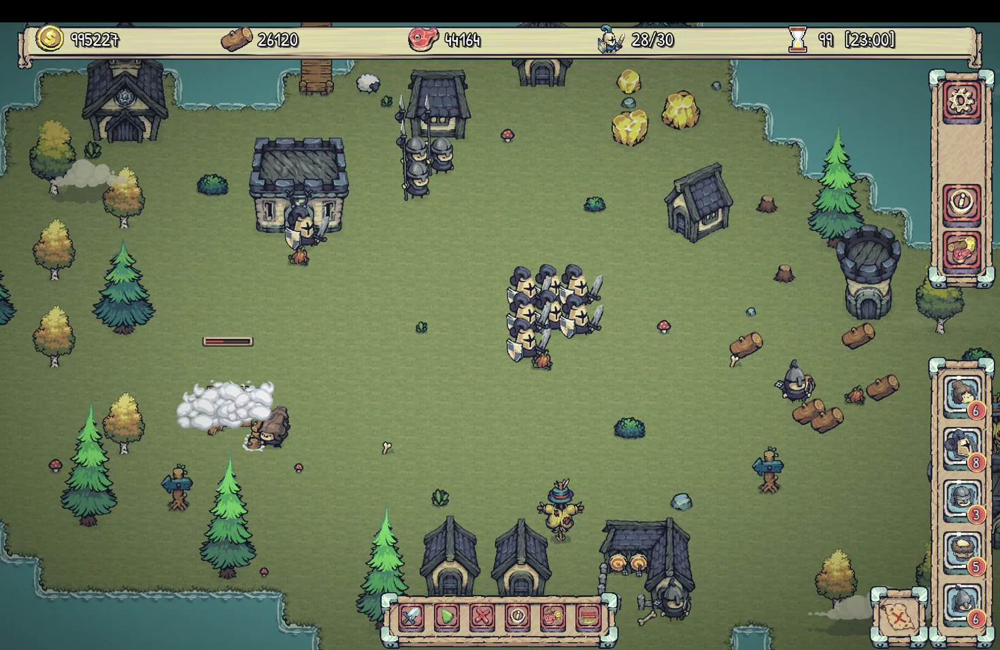
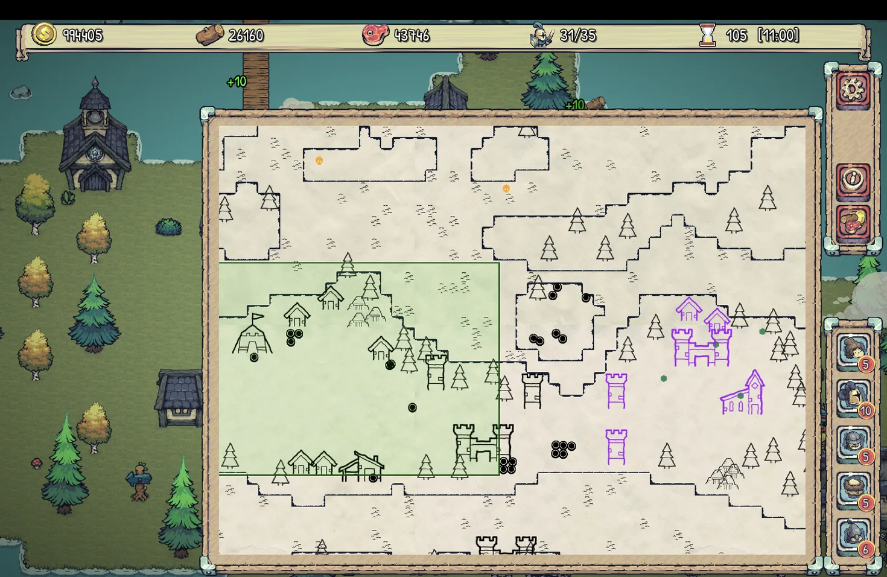
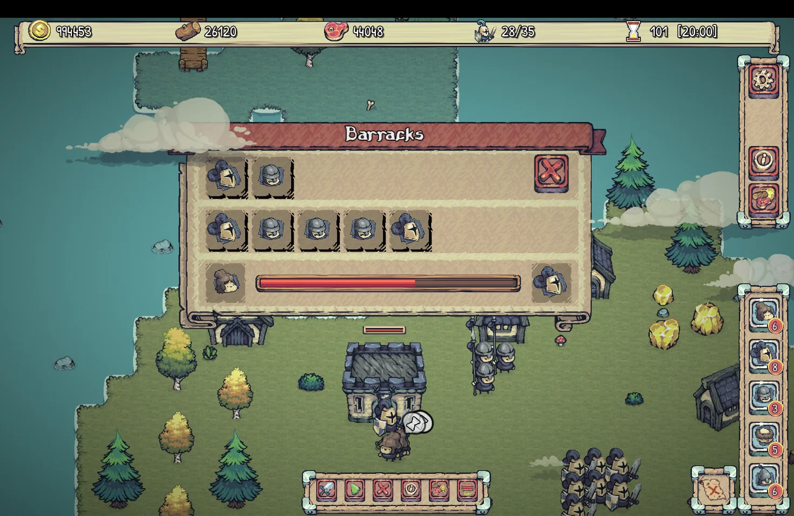
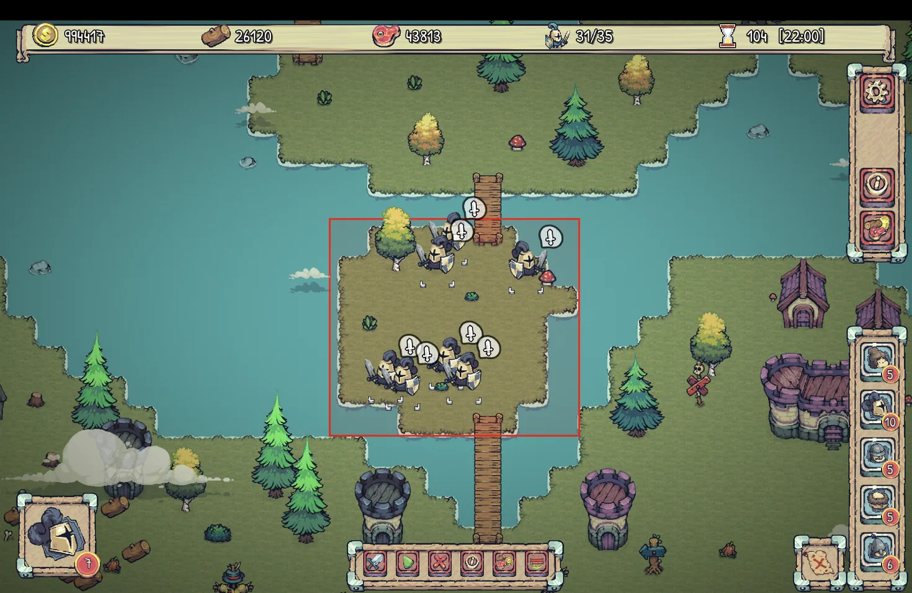
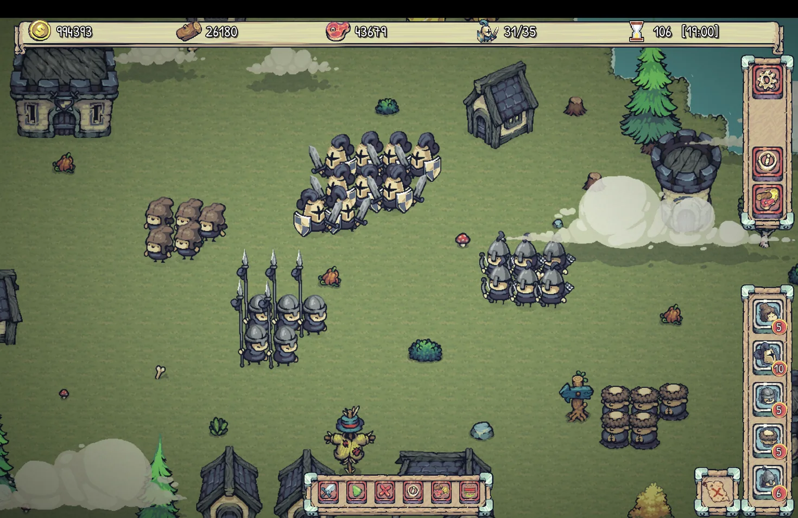
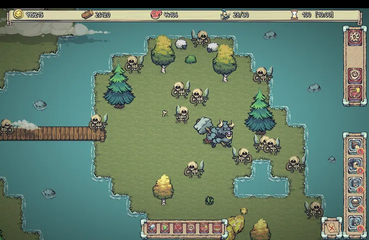
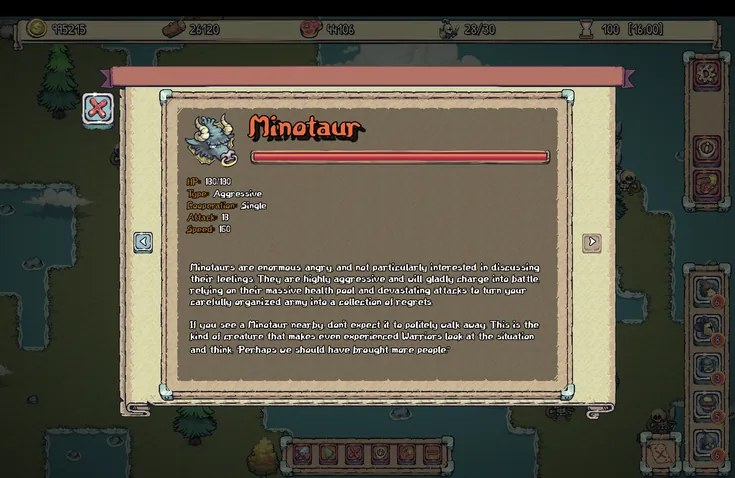

建てる
城、家、兵舎、塔、修道院などを建設しよう。建物がひとつ増えるたびに、集落が次にできることが変わっていく。

小さな集落から始めて、栄える王国へと育てていこう。
木を伐り、肉を狩り、金を掘って、民を食べさせ働かせ続けよう。
戦士、弓兵、槍兵、修道士を雇い、鍛え上げて戦える軍勢にしよう。
危険な魔物や敵対する王国と、マップの支配権をかけて戦おう。
城、家、兵舎、塔、修道院などを建設しよう。建物がひとつ増えるたびに、集落が次にできることが変わっていく。

森、山、川、海岸、そして危険な原野を切り拓こう。マップは資源も、それを守るものも隠している。

人口、資源、建設、兵力のバランスを取ろう。兵士をひとり鍛えるということは、採集をやめる村人がひとり増えるということだ。
モンスターや敵の領主とのリアルタイム戦闘で軍を指揮しよう。数と同じくらい、配置がものを言う。

新たな集落を興し、海岸沿いへ、丘の奥へと国境を押し広げよう。

ちっぽけな集落を、世界すべてを治められる王国へと変えていこう。
Castlefolk は王国規模で遊ぶゲームです。城壁の外には、拓くべき森、拓くべき海岸、追い抜くべき敵の領主 — そして、ひとりきりの木こりを喜んで平らげる原野の住人たちが待っています。
羊皮紙のマップまで引いて、世界の全体像を眺めよう。自分の領土、敵の領土、そしてその間に残された無主の地が見える。

ゴブリン、トロル、ノール、さらに厄介なものたちが、あなたの欲しい土地を押さえている。厄介事で済む相手もいれば、遠征そのものを終わらせる相手もいる。

どの魔物にも図鑑のページがあり、能力値と、少しばかり過剰な個性が記されている。
以下の画像はすべて、現在のゲームそのままの姿です。
Castlefolk は開かれた場所で作られています。すでに動いているものと、まだ作っているものは以下のとおり。日付は出しません — よくなったときが完成です。
集落を築こう。軍を興そう。民を守ろう。世界を征服しよう。
Steam で Castlefolk をウィッシュリストに追加ウィッシュリストへの追加は開発の後押しになり、リリース当日にお知らせが届きます。